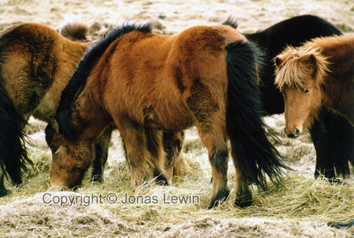

Iceland, Nature, Lava and Volcanos, 2001-03.
|
It would have taken me a lot longer to create this large crater.
Icelandic
horses on Iceland. What a genuine feeling. Small tough horses, that have
their famous "5th gear" called Tölt. This is the continental rift that is slowly dividing Iceland into 2 halves.
Well, what you se here is true, but not the whole truth. It is only part of
the rift, as it is a hundred meters wide. So this rift was created by the
land moving apart. Vegetation / Landscape.
You
can clearly see that the lava was once liquefied. And now It's rock solid.
You can even see the "waves" that the lava created. |